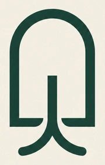
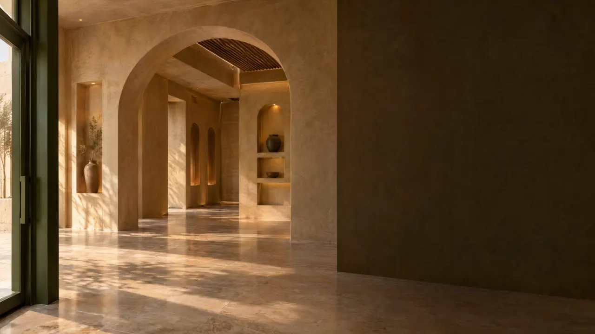

↗ العودة إلى الموقعجذور راسخة.
VENUE ROOT / DIRECTION 01
جذور راسخة.
بدايات واعدة.
لوحة تصميم قابلة للتعديل، تستخدم ألوان الموقع وخطوطه ومكوناته الفعلية.
01 / الشعار المقترح

VenueRoot
الباب بداية المكان، والجذور بداية النمو.
الأصل المولّد محفوظ كصورة PNG؛ ليس ملفًا متجهيًا.
02 / لوحة الألوان
#173D32
#F5F1E8
#DED2BC
#AE7955
أخضر عميق، حجر دافئ، ولمسة نحاسية. مساحة هادئة لفكرة كبيرة.
03 / الخطوط
فكرتك اليوم.
وجهة بكرة.
IBM Plex Sans Arabic — نص عربي واضح، عناوين خفيفة ومسافات سخية.
من أول فكرة إلى أول ضيف، نرتّب معك رحلة تأسيس مشروعك.
04 / الأزرار والروابط
خطّط لمشروعك ↗اكتشف المنصة ↙
مقارنة عروض الأسعار✓
05 / اتجاه الصورة والحركة

قصة مساحة تتحول إلى مقهى. إضاءة طبيعية، خامات ملموسة، حركة متصلة، ونصوص عربية حقيقية فوق الصورة.